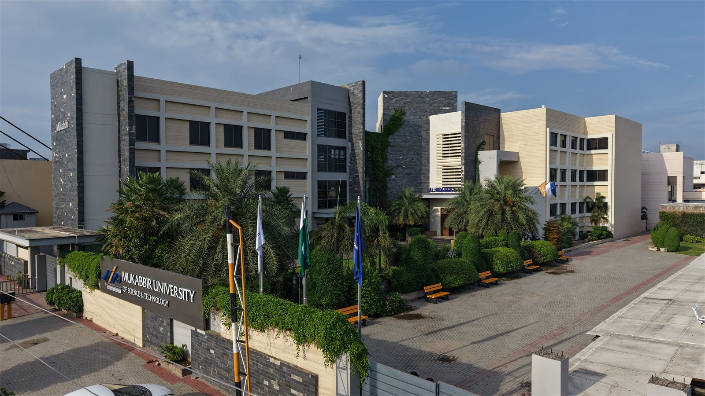
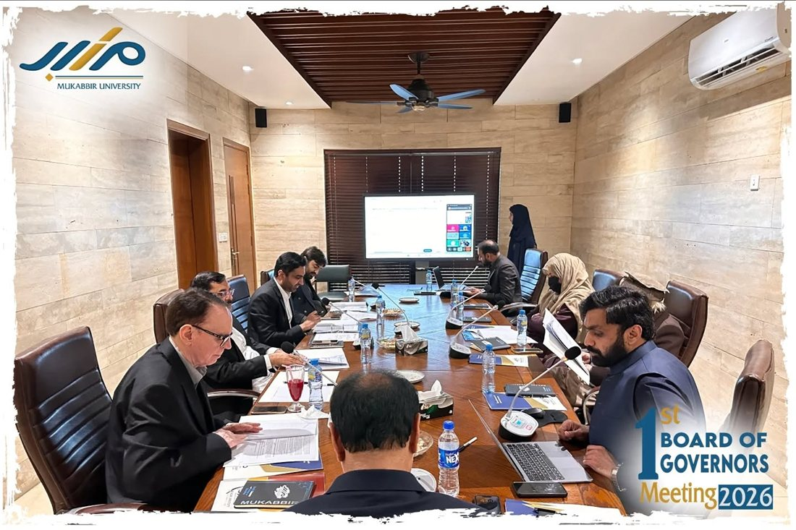
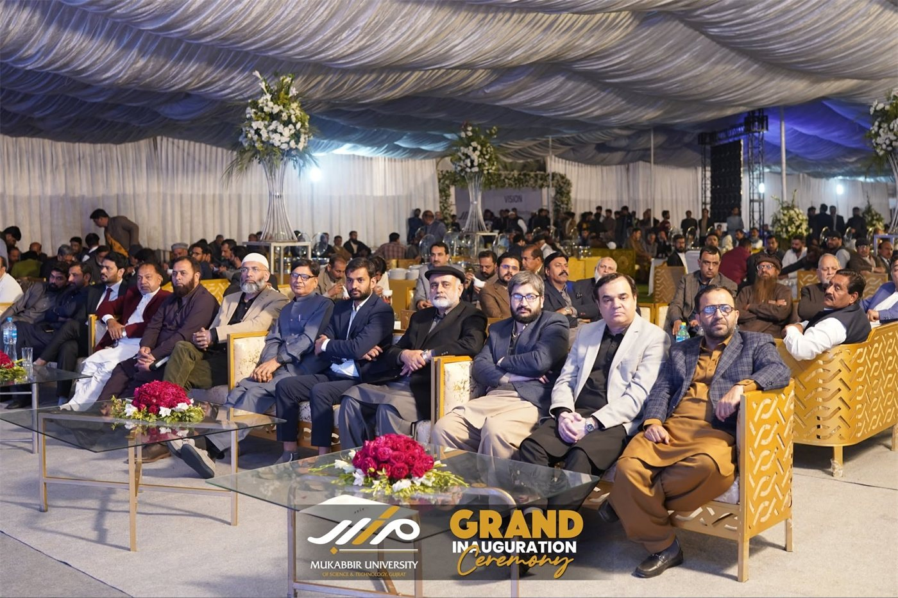
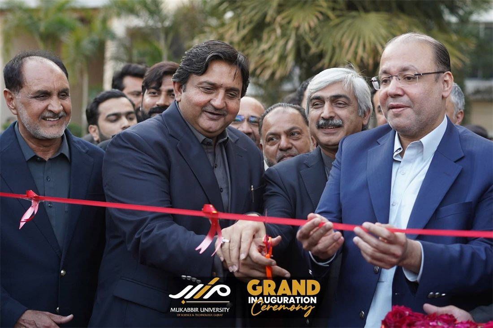
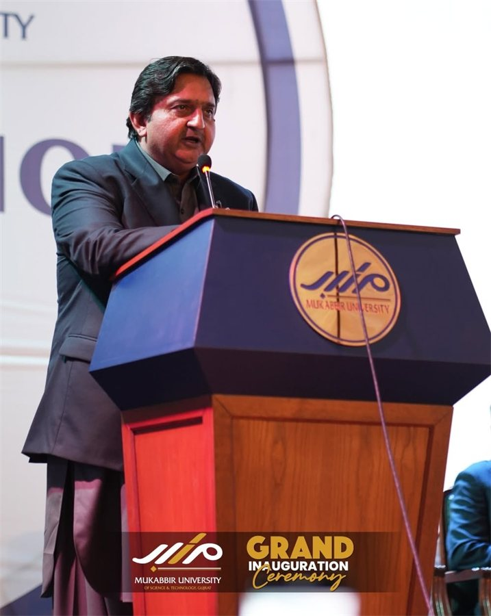

A Legacy That Dates Back to 1990
Mukabbir University’s long-standing legacy of academic excellence dates back to 1990 as an institution looking forward to new opportunities for future generations through quality education, values-based education, and innovative thinking for the future. From the famous Dar-e-Arqam Schools in the Gujrat area, we have progressed through time to empower generations with quality education based on value and education for the future.
At Mukabbir University, we understand that education does not only take place in the classroom; it also occurs when we provide the means to develop the mind through rigorous course work; develop the character through Islamic values; and develop leaders who possess relevant, real-world skills that can be applied every day. Our purpose-built and modern campus provides an exciting and dynamic space where science, technology, business and the liberal arts all come together to offer a well-rounded educational experience.
We offer separate classes for boys and girls at both our Al-Razi Complex and Central Complexes; this allows us to create an environment that is conducive to academic achievement and the development of the whole person in a spiritually uplifting, respectful and courteous manner.

Main Campus · GujratFrom a Classroom in 1990 to a University in 2025
The story of Mukabbir University of Science & Technology, Gujrat is rooted in a longstanding tradition of service to education—a journey of institutional integrity, hard work, and an unwavering commitment to educational uplift.
Dar-e-Arqam Schools Founded
What started as a humble initiative to provide value-based learning has grown into one of Pakistan’s most respected school networks, recognized for academic excellence, character development, and a broad national presence.
Over the decades, thousands of students have graduated from Dar-e-Arqam Schools, many of whom now serve with distinction across diverse sectors, including education, healthcare, civil services, business, and technology—a reflection of the values they were nurtured with and their commitment to building a stronger, more prosperous Pakistan.
Mukabbir College, Gujrat
This journey expanded with the establishment of Mukabbir College, Gujrat—an ambitious step into higher secondary education that combined academic rigor with moral and spiritual development. The College quickly earned recognition for strong results and a disciplined, supportive learning environment.
Mukabbir University of Science & Technology Founded
This vision reached a defining milestone with the founding of Mukabbir University of Science & Technology, Gujrat—an achievement shaped by decades of hard work, institutional integrity, and an unwavering commitment to educational uplift. From nurturing young minds in classrooms to empowering future leaders in lecture halls, the Mukabbir journey reflects not only growth in scale, but a deepening of purpose.

Grand Inauguration Ceremony
Mukabbir University was honoured to welcome its Chief Guest, Malik Muhammad Ahmad Khan, Honourable Speaker of the Provincial Assembly of the Punjab, along with esteemed guests Chaudhry Shafay Hussain (Provincial Minister for Industries, Commerce & Investment), Raja Aslam Khan (MPA), Chaudhry Abdullah Yousaf (MPA), Rana Javed Iqbal, Rana Aurangzeb, and the Assistant Commissioner, Gujrat.
The dignitaries were warmly received by Prof. Irfan Ahmed, Founder & Chairman of Dar-e-Arqam Schools Pakistan, and Mr. Iftikhar Ahmed Cheema, Chairman of Mukabbir University of Science & Technology, Gujrat.



“Our mission remains clear: to develop knowledgeable, responsible, and value-driven individuals who contribute meaningfully to society and to the advancement of Pakistan.”